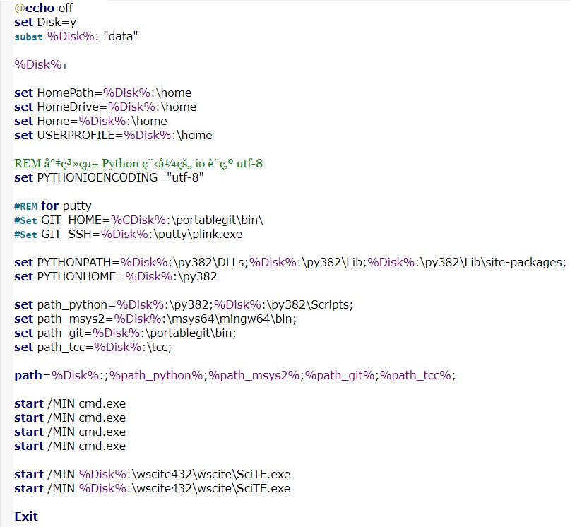
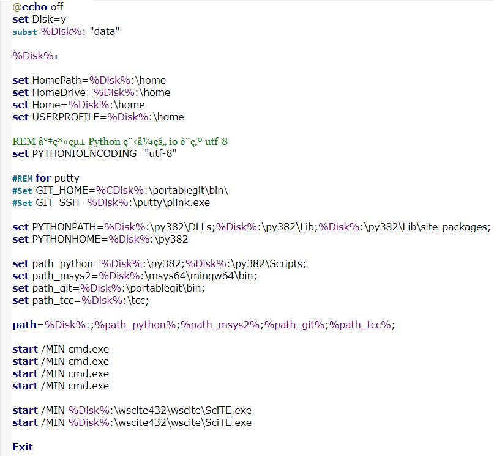
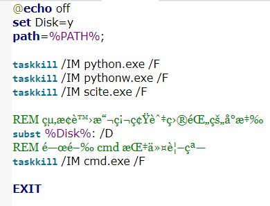
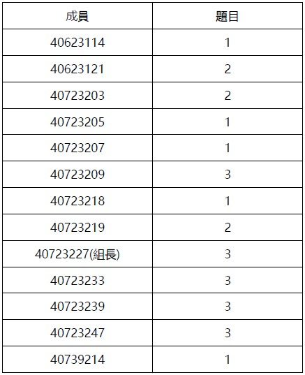

Weeks <<
Previous Next >> week6-10
week1-5
week1
1.在github建立新倉儲cd2020
2.將倉儲git clone下來
3.用git submodule add指令下載子模組(指令：git submodule add https://github.com/mdecourse/cmsimde.git cmsimde)
4.進入倉儲資料夾中tmp>cd2020>cmsimde> up_dir將檔案全選後複製到倉儲資料夾中
5.輸入 python wsgi.py 開啟近端
6.成功開啟後就可以開始編輯，編輯完後將網頁轉成靜態頁面，再將檔案push就完成了
影片連結：https://youtu.be/NOnSq3zrxDg

week2
Python3.7.3升級至Python3.8.2
1.在2019fall裡建立cd2020
2.cd2020內新增data，在data底下新增py32、wscite432、portablegit
3.至Python官網找3.8.2版本，拉到最底下點選Windows x86-64 executable installer下載安裝檔，路徑設定到data/py382
※選項pip取消勾選
4.下載SciTE系統，下載完後解壓縮至data/wsite432
5.建立新的start.bat、stop.bat

 


6.下載MSY32至data下
7.下載Portable Git 64-bit Git for Windows Portable 至 data/portablegit
8.執行指令，輸入python get-pip.py、pip install flask bs4 lxml pelican markdown flask_cors leo
影片連結：https://www.youtube.com/watch?v=geKi4BFJb3Y
week3
作業一：請描述如何針對該課程進行有效的隨機分組，或者隨機進行點名？
PDF：https://github.com/s40739214/cd2020/tree/master/downloads
影片連結：https://youtu.be/8DPiM75fRQQ
第三組第一次直播會議
會議流程:
1.直播會議,組員簽到
2.討論工作分配
3.問題提問
作業一:
1.請描述如何針對該課程進行有效的隨機分組，或者隨機進行點名？
2.描述如何為Windows 10 64位系統準備一個可移植的Python編程系統，以允許在Github上維護CMSiMDE網站，Pelican博客和js演示文稿？
3.您需要從http://www.coppeliarobotics.com/helpFiles/index.html了解什麼來實現四輪機器人？
注意事項:
1.作業一必須在3/26前完成，並上傳pdf檔到個人倉儲的download上。
2.每周務必上傳進度。
3.不會做的可以問會的同學或在gitter上發問。
4.請依每個人的作業一pdf檔、網站內容，進行互評。https://docs.google.com/forms/d/e/1FAIpQLSeBw2zOZZvLzREkonbtrEeMLixmSVqsxGwq7LZekra2lcBXgQ/viewform
工作分配：

影片連結：https://www.youtube.com/watch?time_continue=1&v=ZMKNMympFY0&feature=emb_logo
Weeks <<
Previous Next >> week6-10